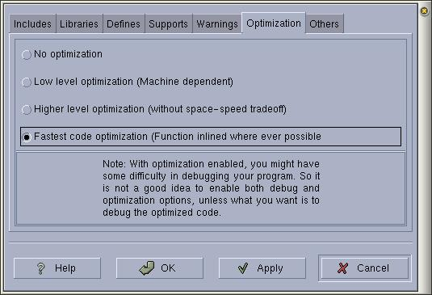

|
|
Anjuta Manual version 0.1Copyright (c) Kh. Naba Kumar Singh |
| Contents | Index | Shortcuts |
| PREV: Compiler warnings | UP: Setting Compiler Options | NEXT: Other compiler options |
Select the code optimization level you want for your program.

Things to note:
Note that you should not enable any short of optimization if you have enabled debug option in the next page. This won't do any harm to your program if you build your program with both optimization and debug options enabled, but it will certainly make your life difficult while debugging the program.
This is because, with optimization enabled, the compiler will modify your code to improve the performance of your program . This sometimes create confusions while debugging, as the line number that the debugger refers to, while your program is being debugged, does not always corresponds to the actual line number in your source file.
Of course, the code optimization takes place during the compilation only and has nothing to do with the source code in the file.